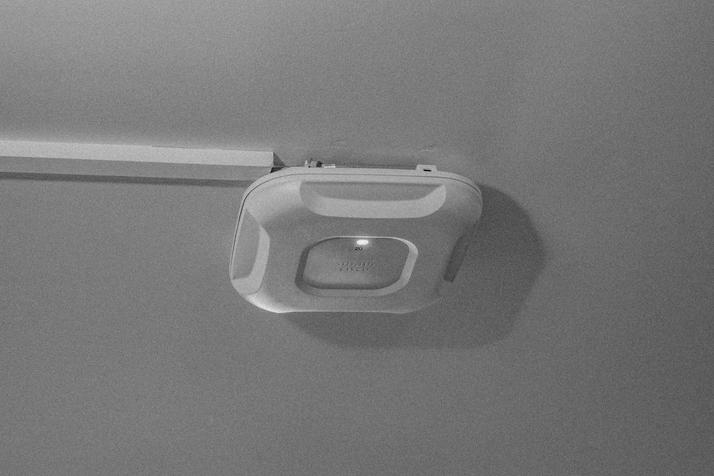
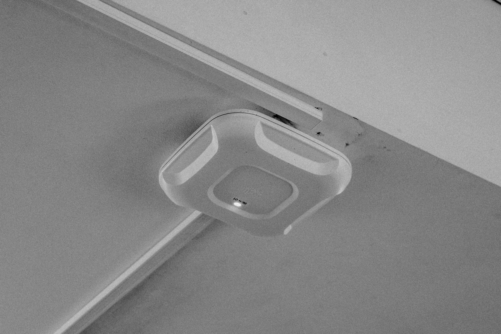

Something that is a little more obvious in its relation with the internet (but not exactly the internet) is Wi-Fi. Looking around all the spaces I spend the majority of my time in there is always Wi-Fi modems; at my home (a hostel) and at university. Wi-Fi has become a norm in society where it's almost essential that we have it in order to work from home and to access luxury movie streamers like Netflix or Hulu.
What is Wi-Fi?
Wi-Fi is a popular wireless networking technology that uses radio waves to provide wireless high-speed Internet and network connections.
Internet vs Wi-Fi
The internet provides a way for one computer to talk to another and this called the 'Internet Protocol'- IP for short. Without this protocol, even if two computers had a cable, they would not be able to understand each other. The connection is there but the language is not understandable and there is no way the two computers will be able to communicate in this way. There is a sever and its purpose is to connect your computer to another. Each server has a uniwue address on the Internet called its 'URL'. The internet is what is in between your computer, your server, and someone elses computer and their server. The "net' is what ties these all together. Let's say you are at home... The Internet service provider, or ISP, provides the cable that goes from your house to the Internet. If you have an Ethernet Jack you plug in two devices: One is a 'modem' and the other is called a 'router'. The modem translated the internet signal from the outer world into a native language your computer can understand and the router is a tiny radio tower that broadcasts Wi-Fi throughout your home.So... Wi-Fi is technically just a radio signal. It is just a way of connecting to that wire and out to the Internet, wirelessly.
In the hostel where I stay and at university there are these types of wifi modems that are stuck to the top of the ceiling. I remember when wifi modems weren't like this and it was only broadband connection where you had to connect some cables to your desktop computer and wait for it load.

Two
I did try to find different looking wifi modems in places but all of them look similarly the same. This second one only has one cable pipe leading into it.

Three
A third modem on a different ceiling, same building. Same design adn everything.
Four
Now this modem is located in the WIG401 lab at the Te Aro Campus. It's design is different and it looks to have no long cable attached. maybe because it's hidden. It's interesting to see the different modems around, from these ones that are stuck to the ceiling to the less stable ones that stand.